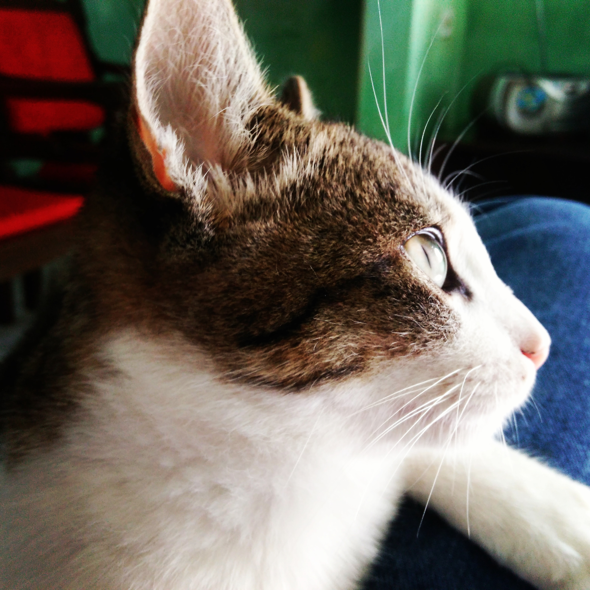

Jenivaldo Lisboa
Professor
Contato
- +55 82 9 0000-0000
- jenivaldo@yahoo.com
- quimic0.com.br
- ProfJenivaldo
Skills
HTML, CSS, Python, Git & GitHub
Linux
Físico-Química, Eletroquímica
Jenivaldo Lisboa
Professor
Contato
Skills
HTML, CSS, Python, Git & GitHub
Linux
Físico-Química, Eletroquímica
Olá sou o Jenivaldo
Sou professor há quase 10 anos, atuando no incentivo à iniciação científica entre jovens estudantes da educação básica.
Possuo uma boa capacidade de trabalho em equipe e pró-atividade, buscando empreender em meu ambiente de trabalho.
Empresa 01
2012~Presente
Professor
Ensino de Química na Ensino Médio, com desenvolvimento de atividades de iniciação científica e criação de clubes de conhecimento ligados às áreas de ciências, astronomia e robótica.
Empresa 02
2008~2014
Agente Administrativo
Realização de atividades de arquivamento e conferência de documentos financeiros.
UFAL
2014~2018
Ciências
Doutorado em Ciências, com habilitação em Físico-Química (Área de atuação: Eletroquímica Fundamental e Aplicada).
UFAL
2012~2014
Ciências
Mestrado em Ciências, com habilitação em Físico-Química (Área de atuação: Eletroquímica Fundamental e Aplicada).
FACEAR
2011~2013
Ensino de Ciências
Pós-Graduação Lato Sensu em Ensino de Ciências.
UNEAL
2006~2012
Química
Licenciatura Plena em Química.
SBPC
2022
Recursos e Estratégias para o Ensino Online e Ativo da Química
Minicurso acerca de metodologias para o ensino remoto de Química promovido pela Sociedade Brasileira para o Progresso da Ciência.
DIO
2021
Introdução à programação com Python
Curso realizado na Digital Innovation One em 2021.